Reimu Hakurei
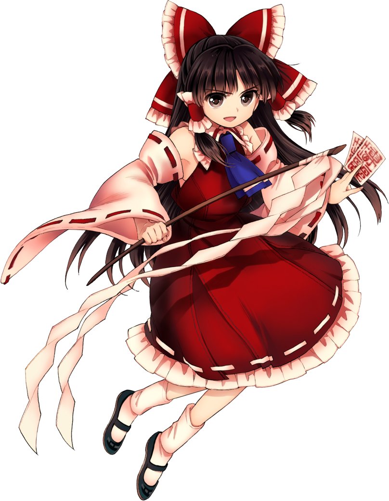
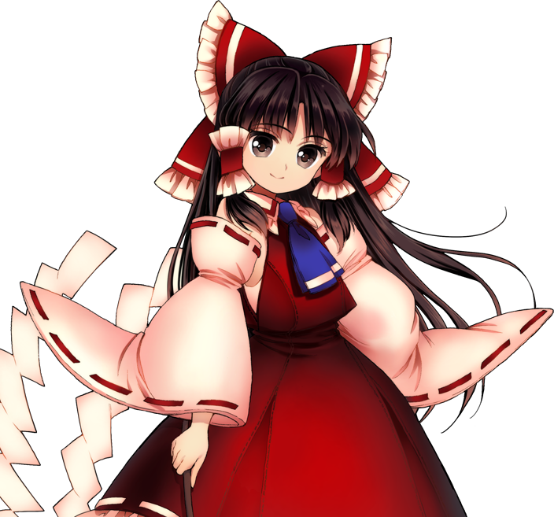
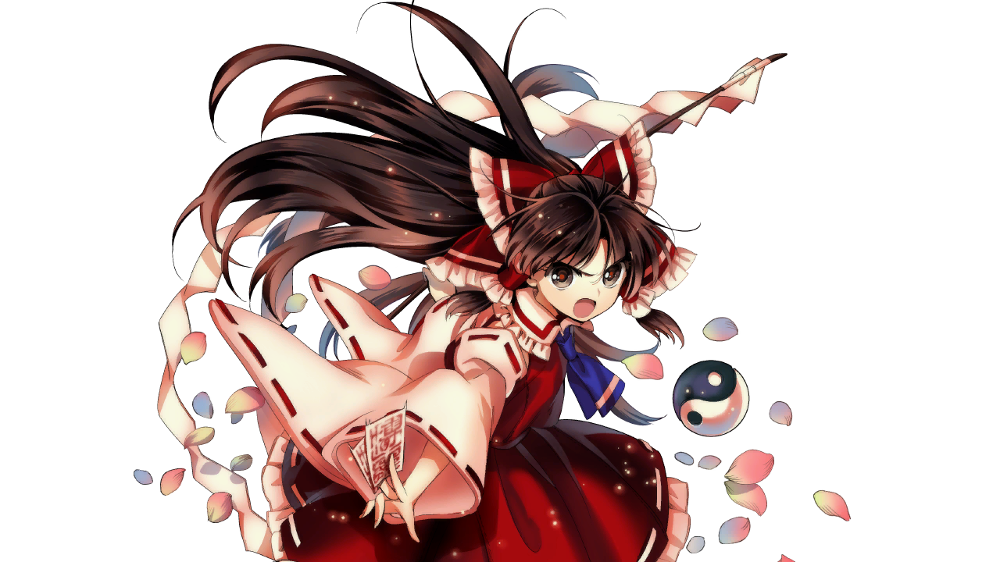
Uhhh... Do we have to fight? 'Cause I'd rather not.
| Species |
Human |
| Ability |
Manipulation of auras |
| Occupation |
Shrine Maiden |
| Home |
Hakurei Shrine |
Reimu Hakurei is the iconic protagonist of the Touhou Project series. As the shrine maiden of the Hakurei Shrine, she is responsible for maintaining the delicate balance between the human world and the mystical realm of Gensokyo. Her days are typically mundane, spent cleaning the shrine and dealing with occasional visitors. However, when strange occurrences disrupt the peace of Gensokyo, Reimu is quick to investigate and confront the responsible youkai.
Marisa Kirisame
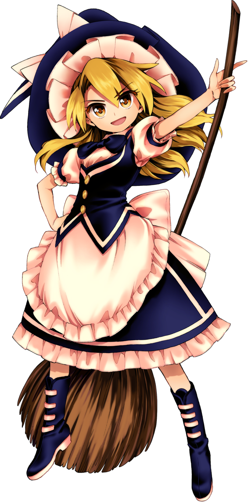
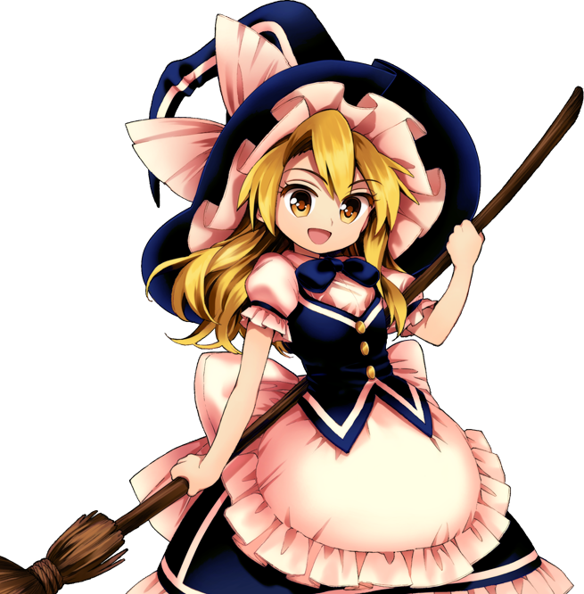
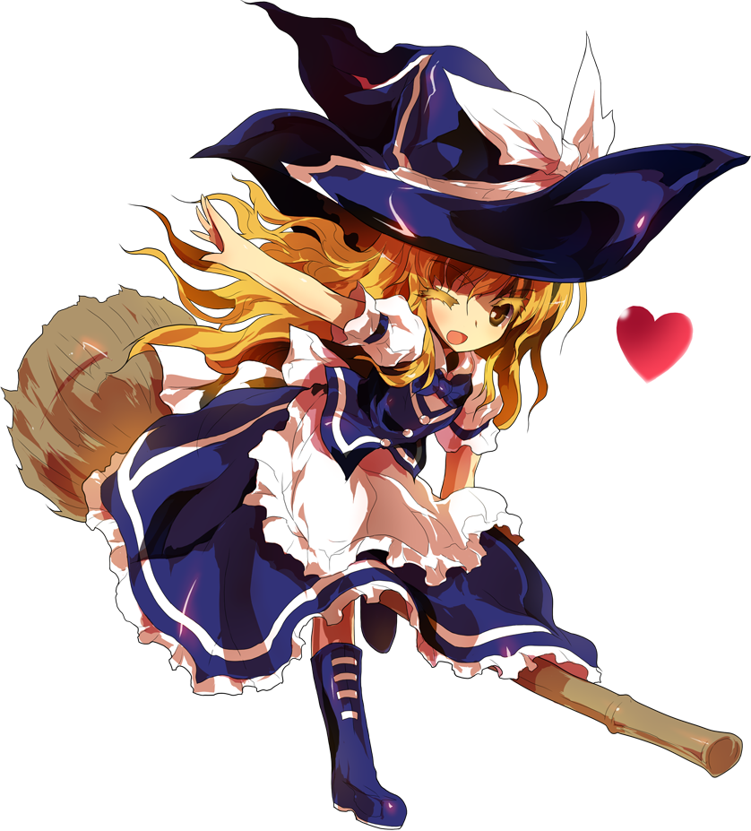
If it's going to bring me a boring life, I'd rather die!
| Species |
Human |
| Ability |
Light & heat magic |
| Occupation |
Magician |
| Home |
Forest of Magic |
Marisa Kirisame is a human magician who resides in the Forest of Magic within Gensokyo. Known as an "ordinary magician," she contrasts the spiritual abilities of many other characters with her reliance on learned magic. With a penchant for collecting items, both mundane and magical, Marisa often finds herself entangled in the unusual occurrences that plague Gensokyo. Her adventurous spirit and powerful magic make her a formidable opponent, and she shares a friendly rivalry with Reimu Hakurei, often joining forces to resolve incidents.
Yukari Yakumo
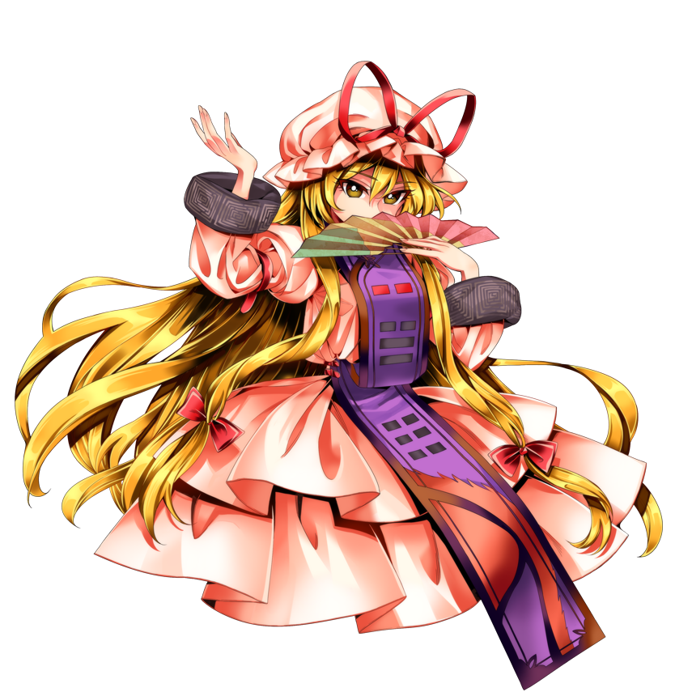
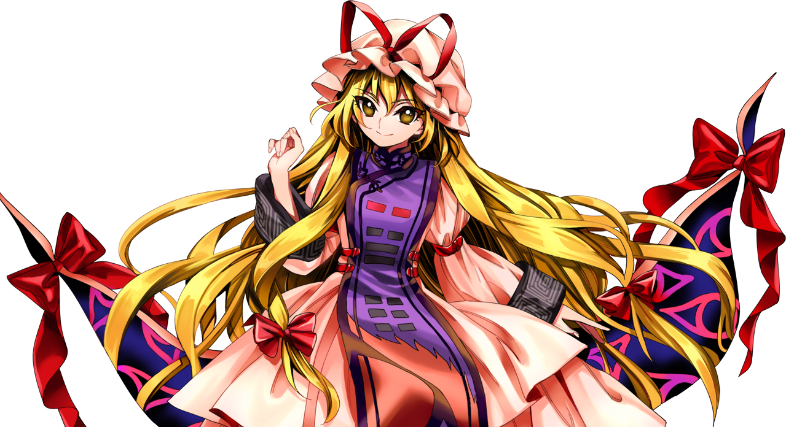
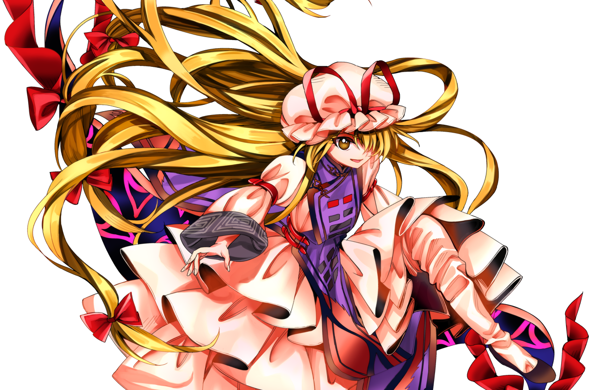
My weakness is... nothing.
| Species |
Youkai |
| Ability |
Manipulation of boundaries |
| Occupation |
Sage |
| Home |
Boundaries of Gensokyo |
Yukari Yakumo is a legendary youkai who holds the unique ability to manipulate boundaries. As one of the oldest inhabitants of Gensokyo, she is a figure of both intrigue and fear. With a nonchalant and often condescending demeanor, Yukari observes the world around her with a detached amusement. Her power allows her to control the very fabric of reality, creating portals, illusions, and manipulating space as she pleases.
Joon Yorigami
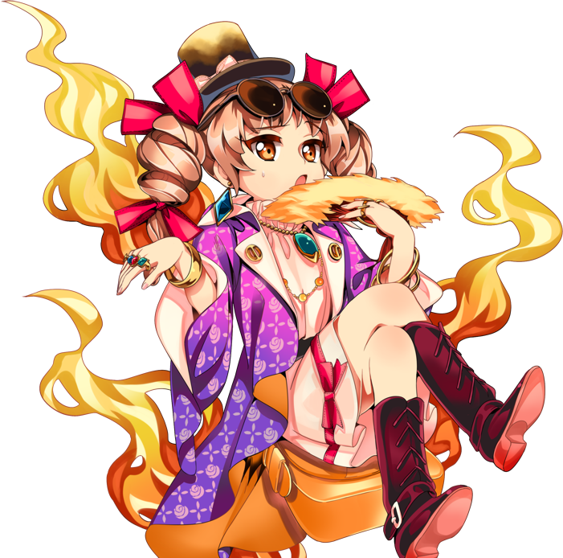
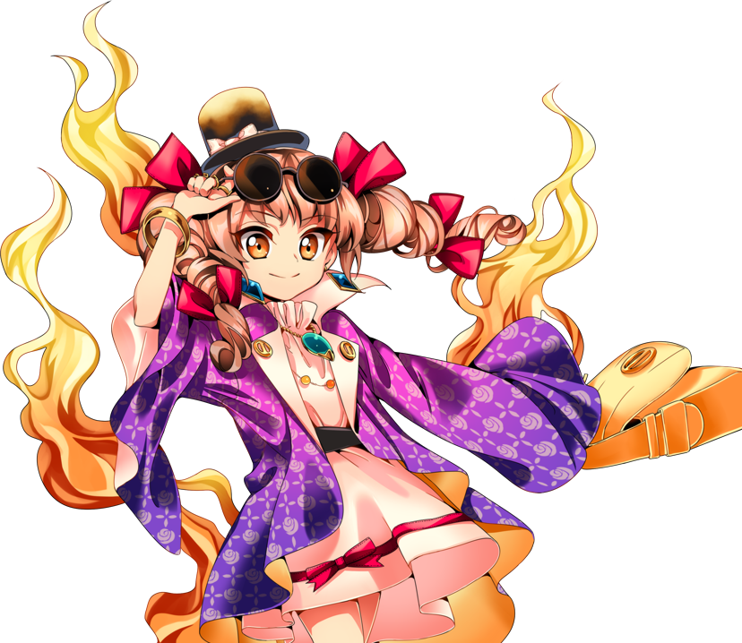
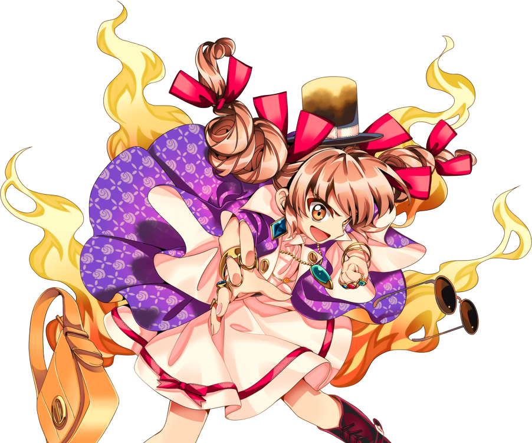
Emotions and money-sense are like bears and honey.
| Species |
Pestilence God |
| Ability |
Manipulation of financial assets |
| Occupation |
Con Artist |
| Home |
Myouren Temple |
Joon Yorigami is a pestilence god, one half of the Yorigami sisters infamous for bringing financial ruin to Gensokyo. Unlike her more reserved sister, Shion, Joon is extravagant and flamboyant, using her charm to manipulate others. Her true nature is cruel and manipulative, enjoying the chaos and suffering she inflicts. While appearing glamorous, she is a symbol of unchecked greed and the detrimental effects of materialism, making her a stark contrast to the typically benevolent characters of the Touhou universe.
Nitori Kawashiro
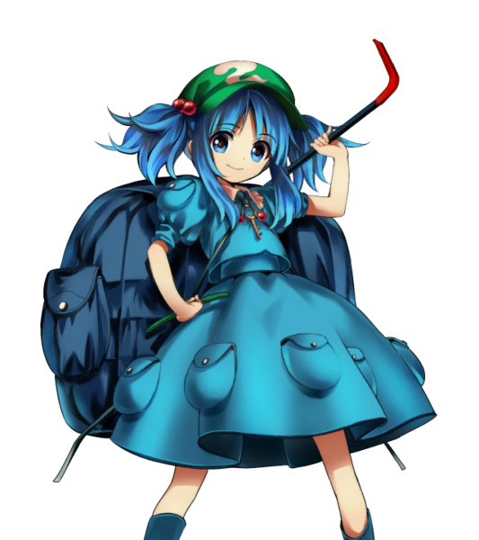
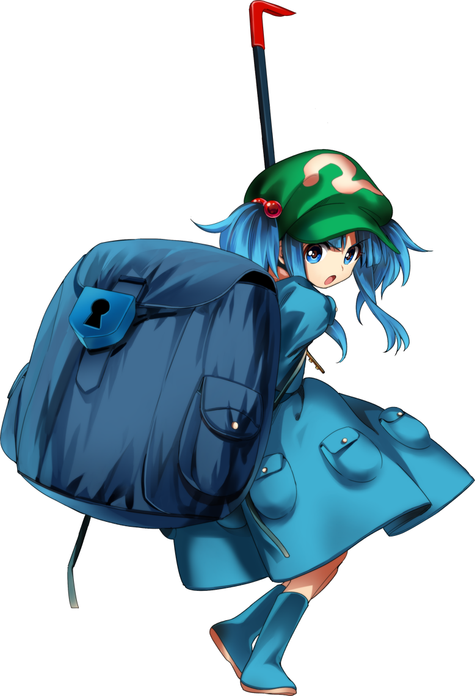
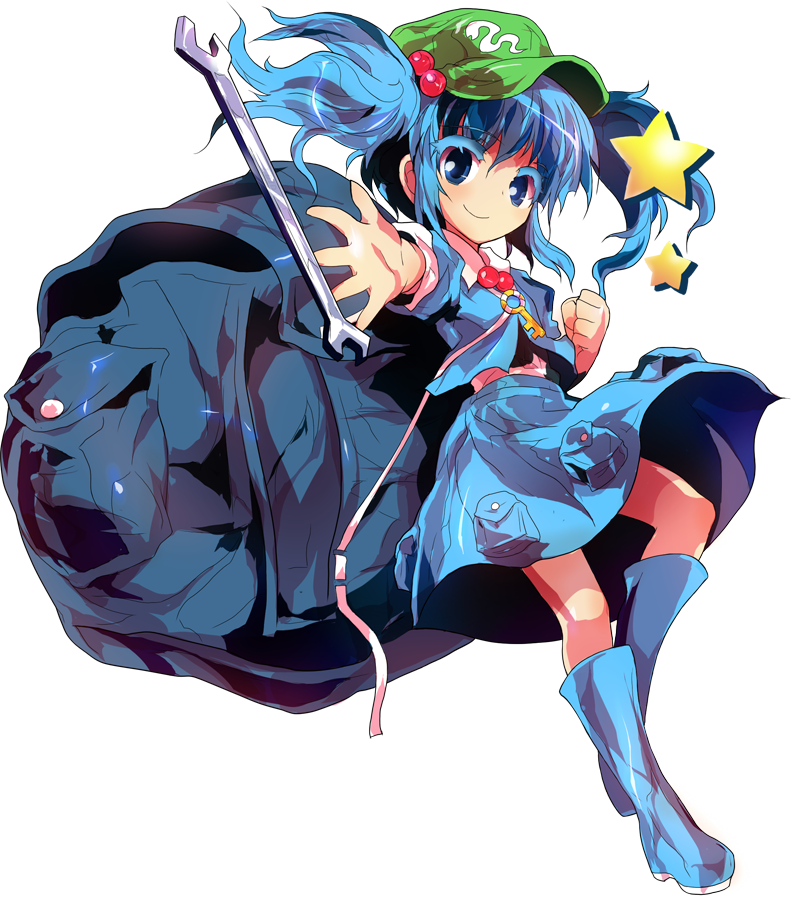
Haven't you mistaken an old enemy for a friend?
| Species |
Kappa |
| Ability |
Manipulation of Water |
| Occupation |
Engineer |
| Home |
Genbu Ravine |
Nitori Kawashiro Nitori Kawashiro
is a shy kappa who resides in the Genbu Ravine on Youkai Mountain. Unlike many other youkai, her strength lies not in magic, but in technology and engineering. As a kappa, she possesses the innate ability to manipulate water, which she utilizes creatively in her inventions. Nitori is a brilliant mind, constantly tinkering with new contraptions and gadgets. Her workshop is filled with a variety of strange devices, reflecting her boundless creativity.